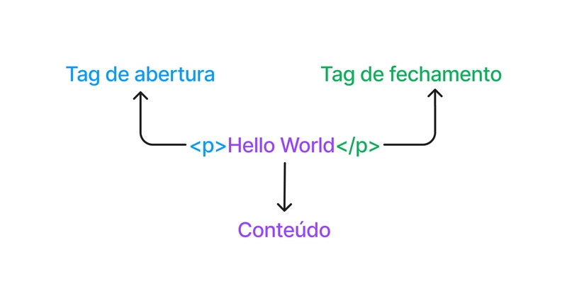
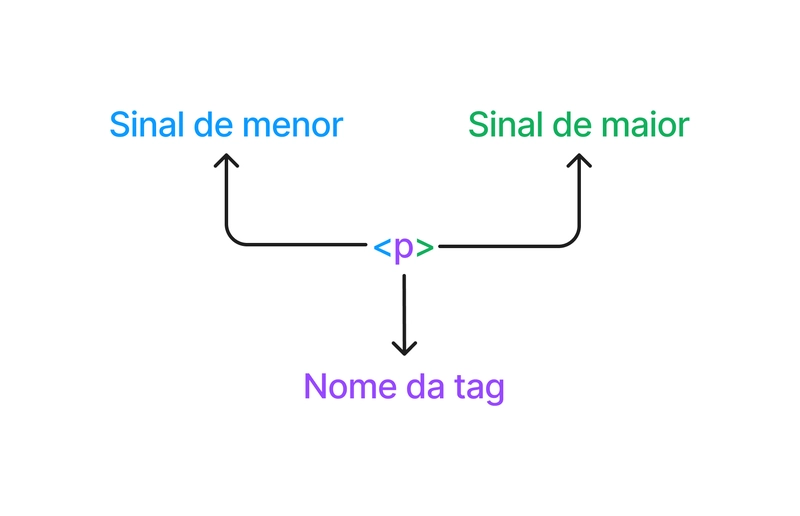
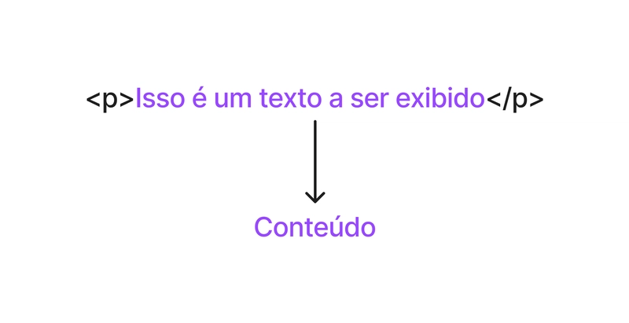
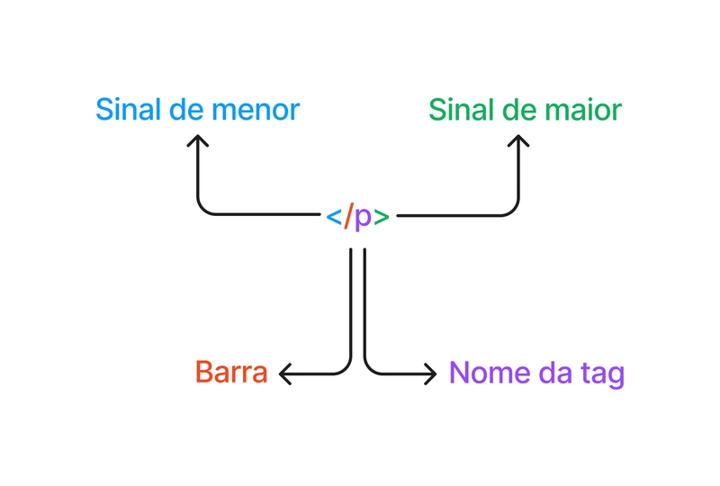
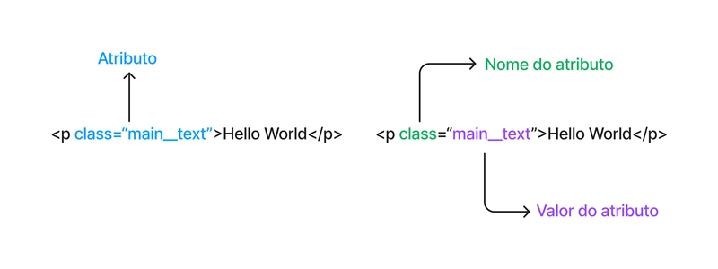
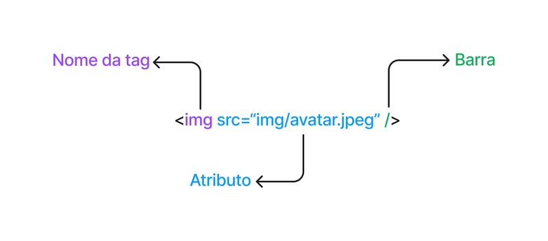

Explorando a anatomia de um elemento HTML, atributos e elementos vazios.

O elemento de parágrafo da imagem acima é divido em 3 partes:
Definida a partir do elemento (<p>). É criada com o sinal <, seguido do nome da tag p e do sinal >.

Tudo aquilo entre a tag de abertura e a tag de fechamento. No caso de um parágrafo, o conteúdo será texto.

Usa o mesmo nome da tag, mas com uma barra após o sinal de menor: </p>.

Elementos também podem ter atributos que possuem informações extras para uma tag. Importante ressaltar que os atributos devem ser inseridos na tag de abertura e não no conteúdo do elemento.
<p class="destaque">Meu parágrafo.</p>
<input type="text" required>O atributo class é um atributo que deve receber um valor. Para isso, é necessário usar o sinal = e atribuímos um valor para ele entre aspas.
Mas também existem atributos que não recebem valor, como o atributo required (um atributo booleano).

Até agora vimos elementos que precisam de conteúdo, mas no HTML também existem elementos que não possuem conteúdo. Chamamos esses elementos de elementos vazios.
Esses elementos não possuem uma tag de fechamento e nem precisam envolver qualquer tipo de conteúdo para cumprir seu objetivo.
Um exemplo de elemento vazio é a tag de imagem:
<img src="imagem.png" alt="Minha imagem">Observação importante: Antigamente, elementos vazios possuíam uma barra antes do sinal de maior (<img />), uma prática do XHTML. Em HTML5 moderno, isso não é mais necessário, mas ainda é válido.
